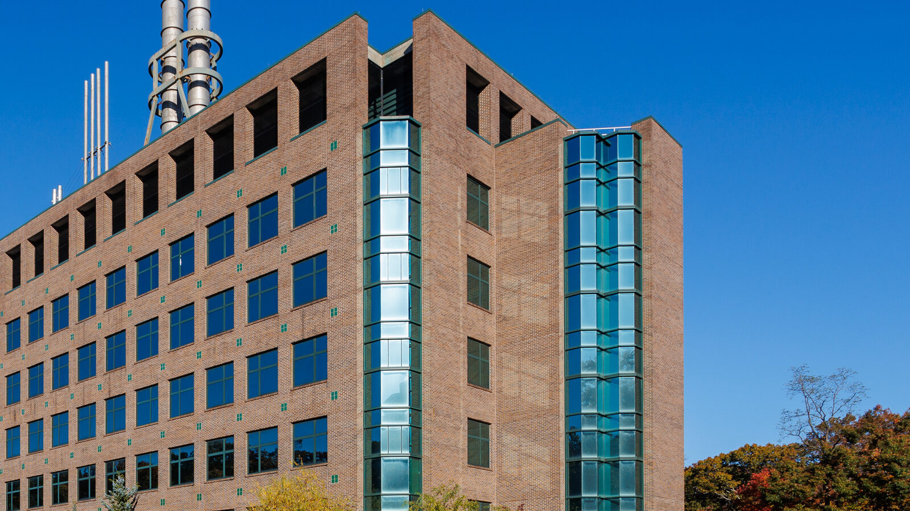

Life Sciences building at Stony Brook University · Photo: Kenneth C. Zirkel · CC BY 4.0 · cropped and optimized for web
STONY BROOK UNIVERSITY
SciOly
Science Olympiad at Stony Brook
A student-run club for science puzzles, build challenges, and games.
Every Tuesday, 7 PM–8 PMFrey Hall 305
No sign-up or prior Science Olympiad experience is needed. New visitors are welcome.
Check this page for confirmed schedule changes.
Come to a meetingRecent meeting topics
Meetings bring together codebreaking, estimation puzzles, games, and build challenges.
Browse meeting flyers